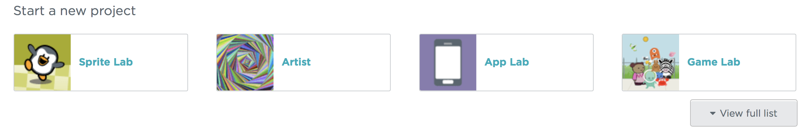

In this post I will make an app on app lab and hopefully you will, too. This will be a quick & easy app but it will teach you how to use the preset functions that app lab has.
Getting Started
So first you have to sign in then click on your username in the top right-hand corner and click my projects. Now click on the app lab:

If you don’t see app lab click view full game list and look for it there.